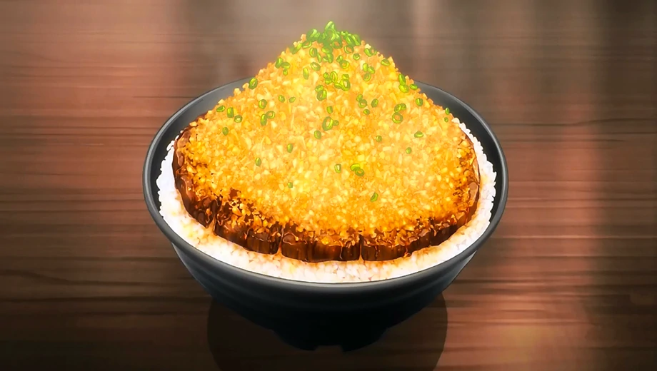

Chaliapin Steak Don

The dish is exclusively made by Sōma combined with the Japanese original dish, the Chaliapin Steak and the donburi concept for his first Shokugeki. Although the dish was made with cheap ingredients that can be found in a supermarket, the dish focused on both innovation and balance of the ingredients to fulfill the donburi mantra, "Dons are completed in one bowl."
Recipe
- Beef Sirloin
- Lots of Onion
- Garlic
- Pepper
- Salt
- Potato Starch
- Rice
- Umeboshi Paste
- Pickled Plumn
Sauce
- Red Wine
- Soy Sauce
- Butter
How to cook
- Chop the onions finely.
- Remove the tendons from the beef and beat it with a meat tenderizer until as flat as possible.
- Cover meat on both sides with the chopped onion and leave for 30 minutes or more. Remove the onion and add salt and pepper.
- Cook the steak to your preference(most would prefer medium-rare). Remove from heat and melt 1 tablespoon of butter in a frying pan and fry the onion used for the beef until it changes color. Adjust the flavor with salt and pepper, then move the onion to the steak.
- Melt the remaining butter in the frying pan and fry the sides of the meat before taking it out.
Making the Sauce
- Add red wine to the frying pan used for the beef to deglaze it. Boil down the wine while scraping off the meat juice.
- Add soy sauce and mix with everything. Adjust seasonings to personal preferences.
- Thicken with dissolved potato starch.
Put rice mixed with Umeboshi paste (pickled plum) in the donburi bowl. Place the beef on top and add plenty of sauce. Top with the finely chopped, cooked onions.
Real Facts
- The Chaliapin Steak is an original Japanese steak. It is a dish made in 1936 for the Russian opera singer Feodor Chaliapin when he visited Japan. At the time, he was suffering from toothaches and said, "I want to eat a tender steak." This dish was devised to answer to his request.
- Donburi (丼, literally "bowl", also frequently abbreviated as "don", less commonly spelled "domburi") is a Japanese "rice bowl dish" consisting of fish, meat, vegetables or other ingredients simmered together and served over rice. Donburi meals are served in oversized rice bowls also called donburi. Donburi are sometimes called sweetened or savory stews on rice.
Home